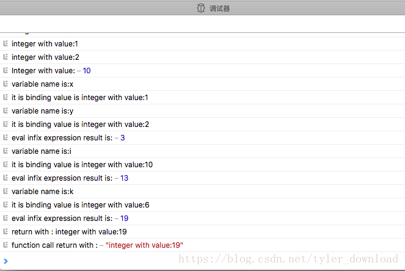

在编程时，我们会初始化一个变量，给变量赋初值，例如下面语句：
let x = 5*5;上面代码被编译器解读后，变量x就会和数值25绑定在一起。下次使用到变量x时，编译器会读取它绑定的值，然后用于相关代码的执行，例如下面代码：
let y = x + 5;编译器执行上面语句后，变量y就会跟数值30绑定起来，本节我们就先增加变量绑定的功能。
变量绑定功能不难实现，我们只要创建一个哈希表，把变量名和它对应的数值关联起来即可，于是我们在MonkeyEvaluator.js中增加如下代码：
class Enviroment {
constructor(props) {
this.map = {}
}
get(name) {
return this.map[name]
}
set(name, obj) {
this.map[name] = obj
}
}在类Enviroment中，代码创建了一个哈希表map，它提供两个接口，get接收变量名，然后把其对应的数值返回，set用来把变量名跟一个数值关联起来。在eval函数中，我们增加对let语句的解释执行，然后把let后面的变量跟等号后面的数值关联起来：
eval (node) {
var props = {}
switch (node.type) {
....
class MonkeyEvaluator {
// change 3
constructor (props) {
this.enviroment = new Enviroment()
}
eval (node) {
var props = {}
switch (node.type) {
case "program":
return this.evalProgram(node)
// change 1
case "LetStatement":
var val = this.eval(node.value)
if (this.isError(val)) {
return val
}
// change 4
this.enviroment.set(node.name.tokenLiteral, val)
return val
...
}
...
}当解析器解析到LetStatement节点时，它执行等号右边表达式，获取要赋值给变量的数值，例如对前面的let语句let x = 25 * 25;代码中的node.value对应的就是等号右边的”25*25”,解析器执行右边表达式后得到数值25,然后调用set接口，把变量名”x”与数值25关联到哈希表中。
一旦变量和具体数值关联后，编译器在读取变量名时就可以查询其对应的数值，为了实现该功能，我们还得在eval函数中增添相应代码：
eval (node) {
var props = {}
switch (node.type) {
....
case "Identifier":
return this.evalIdentifier(node, this.enviroment)
....
}
....
//change 6
evalIdentifier(node, env) {
var val = env.get(node.tokenLiteral)
if (val === undefined) {
return this.newError("identifier no found:"+node.name)
}
return val
}当编译器读取到一个变量名时，它会调用evalIdentifier函数查找变量绑定的数值，该函数直接调用Eviroment类的get接口，传入变量名把其绑定的数值拿出来。有了上面代码后，我们就可以执行下面的语句：
let x = 10;
if (x) {
11;
}把上面代码输入编辑框，点击Parsing后得到如下执行结果：
根据结果来看，编译器能够解读变量x，把它当做数值10，于是if条件成立，编译器执行大括号里面的代码，也是就解读了常量值11.
实现函数调用
当我们完成函数调用功能后，我们的编译器就能执行如下代码：
let addThree = fn(x){return x+3;}
addThree(3)上面代码被编译器执行后，add函数调用会返回结果6.而且编译器还能执行更复杂的函数间套调用，例如：
let callTwoTimes = fn(x ,func) {
func(func(x));
};
callTwoTimes(3)上面代码执行后，编译器将会返回9。
为了实现上面功能，我们需要做两件事，一是增加函数对应的符号对象，而是在解析函数eval中增加相应功能。首先我们看看如何构建函数的符号对象。在Monkey语言中，函数跟常量一样，可以直接赋值给变量，于是它就能跟变量绑定起来，于是函数就可以像变量一样作为参数进行传递，或作为一个函数调用的返回值，首先我们先增加函数的符号对象：
//change 8
class FunctionLiteral extends BaseObject {
constructor(props) {
this.token = props.token //对应关键字fn
this.parameters = props.identifiers
this.blockStatement = props.blockStatement
}
type() {
return this.FUNCTION_LITERAL
}
inspect() {
s = "fn("
var identifiers = []
for (var i = 0; i < this.paremeters.length; i++) {
identifiers[i] = this.parameters[i].tokenLiteral
}
s += identifiers.join(',')
s += "){\n"
s += this.blockStatement.tokenLiteral
s += "\n}"
}
}
//change 8
class FunctionCall extends BaseObject {
constructor(props) {
this.identifier = props.identifier
this.blockStatement = props.blockStatement
this.eviroment = new Enviroment()
}
}我们定义函数调用对象FunctionCall时，专门配置一个环境对象，这样函数中的变量绑定能跟函数外的执行环境分离开来。然后我们在解析函数eval中增加如下代码：
eval (node) {
var props = {}
switch (node.type) {
...
//change 9
case "FunctionLiteral":
var props = {}
props.token = node.token
props.identifiers = node.parameters
props.blockStatement = node.body
return new FunctionCall(props)
case "CallExpression":
console.log("execute a function with content:",
node.function.tokenLiteral)
var functionCall = this.eval(node.function)
if (this.isError(functionCall)) {
return functionCall
}
console.log("evalute function call params:")
var args = this.evalExpressions(node.arguments)
if (args.length === 1 && this.isError(args[0])) {
return args[0]
}
for (var i = 0; i < args.length; i++) {
console.log(args[i].inspect())
}
return functionCall
....
}
....
}
//change 10
evalExpressions(exps) {
var result = []
for(var i = 0; i < exps.length; i++) {
var evaluated = this.eval(exps[i])
if (this.isError(evaluated)) {
return evaluated
}
result[i] = evaluated
}
return result
}添加上面代码后，在编辑框里输入如下代码：
let add = fn(x,y){x+y;};
add(2+2,5+5);然后点击底下”Parsing”按钮，于是我们刚才添加的代码就会运行起来。当语法解析器读取语句”let add = fn(x,y){x+y;};”时会构造一个LetStatement语法节点，在读取等号右边的”fn(x,y){x+y;}”时会构造一个FunctionLiteral语法节点，于是构建的LetStatement语法节点中，其name域为”add”,value域对应的就是FunctionLiteral语法节点。当该语法节点传入eval函数进行解释执行时，读取到FuntioncLiteral语法节点，执行就会进入前面添加的“FunctionLiteral”分支，在该分支中执行器构建一个FunctionCall符号对象，然后代码返回到LetStatementfen分支后，将变量名add和FunctionCall符号对象在哈希表中关联起来。
接着语法解析器在解读代码”add(2+2,5+5)”时，它会构造一个CallExpression语法节点，然后该节点会传入解释执行函数eval,从而进入该函数的”CallExpression”分支，在该分支的代码中，通过函数变量名add找到上一步创建的FunctionCall符号对象，从中拿到函数调用时的参数表达式语法节点，接着调用evalExpressions函数解释执行参数表达式，从而获得最后要传入函数的结果，也就是evalExpressions会将”2+2”,”5+5”解释执行，得到结果4和10，这两个值将会作为调用参数，在执行函数add时传入。
完成上面代码并执行后，得到结果如下：
从输出看，我们的编译器能够识别”add(2+2,5+5)”是函数调用，同时它把参数表达式“2+2”和”5+5“解释执行后得到4和10，并把这两个值作为函数的真正调用参数。
执行输入参数表达式，确定输入参数后，如何真正“调用”函数呢，显然我们需要把函数内的代码一行行的执行。有一个问题需要确定的是，函数被执行时，它的变量绑定环境对象必须和调用函数代码所对应的变量绑定对象不同，要不然函数执行时就会产生错误，例如下面代码：
let i = 5;
k = 6
fn() {
let i = 10;
print(i);
print(k)
}();
print(i) 上面代码有两个同名变量，第一个变量i跟数值5绑定，第二个变量i在函数体内，跟数值10绑定，函数体内的print(i)输出结果是10，最后一句print(i)输出结果是5，因此两个同名变量i必须跟不同的数值绑定，于是两个同名变量i得在不同的Enviroment对象中实现变量绑定。由此我们要实现变量绑定环境的切换，在函数fn外部有一个变量绑定环境，在那里变量i和5绑定，变量k和6绑定，在fn内部又有一个变量绑定环境，在那里，一个新的变量i与10绑定，如下图：
当程序没有调用fn前，程序的绑定环境是第一个方块，当程序调用fn后，绑定环境变为第二个方块，当fn执行时访问到变量k，这时在第二个方块代表的绑定环境中找不到对应关系，于是编译器在执行代码时跑到上一个绑定环境去查找。为了实现该功能，我们添加如下代码：
class Enviroment {
constructor(props) {
this.map = {}
//change 10
this.outer = undefined
}
get(name) {
var obj = this.map[name]
if (obj != undefined) {
return obj
}
//change 12 在当前绑定环境找不到变量时，通过回溯
//查找外层绑定环境是否有给定变量
if (this.outer != undefined) {
obj = this.outer.get(name)
}
return obj
}
set(name, obj) {
this.map[name] = obj
}
}
Enviroment类就是用来将变量与数值绑定的“环境”，get接口根据输入的变量名在哈希表中查询其对应的数值，set用于将变量名与给定数值绑定起来，其中的outer用于将不同的绑定环境连接起来，例如上面讲过的函数调用例子，在函数调用前代码执行对应一个Enviroment对象，当函数调用后，在执行函数体内的语句时对应一个新的Enviroment对象，后者用outer指针跟前者关联起来，outer就如上图两个方块间连接起来的箭头。当在函数体内查找一个变量与数值的对应关系时，如果在当前的绑定环境中找不到，就通过outer指针到上一个绑定环境去找，例如在上面的示例代码例子里，函数执行时要访问变量k的值，这个变量在函数执行时的绑定环境里是找不到的，但是上面实现的get函数会通过outer进入上一个绑定环境然后再查询k与数值的绑定，这时候编译器就能找到变量k绑定的数值。
接着我们在MonkeyEvaluator里面先增加对Enviroment变量的创建：
class MonkeyEvaluator {
// change 3
constructor (props) {
this.enviroment = new Enviroment()
}
// change 11
newEnclosedEnvironment(outerEnv) {
var env = new Enviroment()
env.outer = outerEnv
return env
}
....
}然后再解析LetStatement的分支处理中，增加变量与数值绑定的操作：
eval (node) {
var props = {}
switch (node.type) {
case "LetStatement":
var val = this.eval(node.value)
if (this.isError(val)) {
return val
}
// change 4
this.enviroment.set(node.name.tokenLiteral, val)
return val
//change 5
case "Identifier":
console.log("variable name is:" + node.tokenLiteral)
var value = this.evalIdentifier(node, this.enviroment)
console.log("it is binding value is " + value.inspect())
return value
....
}当编译器执行let赋值语句时，它会调用Enviroment类的set函数将变量名与数值在哈希表中关联起来，当编译器读取到一个变量时，编译器在解释执行时进入”Identifier”分支，然后编译器从Enviroment的哈希表中把变量对应的数值读取出来。完成上面代码后，我们在编辑框中输入如下代码：
let x = 10;
x;点击parsing按钮后，得到结果如下：
由此可见，我们的编译器在执行代码时，遇到变量x后，它从绑定环境中读取到变量x对应的数值是10.接下来我们看看如何执行函数调用。在”CallExpression”分支中，我们添加如下代码：
case "CallExpression":
....
// change 12 执行函数前保留当前绑定环境
var oldEnviroment = this.enviroment
//为函数调用创建新的绑定环境
functionCall.enviroment = this.newEnclosedEnvironment(oldEnviroment)
//设置新的变量绑定环境
this.enviroment = functionCall.enviroment
//将输入参数名称与传入值在新环境中绑定
for (i = 0; i < functionCall.identifiers.length; i++) {
var name = functionCall.identifiers[i].tokenLiteral
var val = args[i]
this.enviroment.set(name, val)
}
//执行函数体内代码
var result = this.eval(functionCall.blockStatement)
//执行完函数后，里面恢复原有绑定环境
this.enviroment = oldEnviroment
if (result.type() === result.RETURN_VALUE_OBJECT) {
console.log("function call return with :",
result.valueObject.inspect())
return result.valueObject
}
return result在执行被调函数的代码前，我们先把当前绑定环境缓存在oldEnviroment,然后newEnclosedEnvironment创建新的执行环境，该函数在创建新的Enviroment变量时，会把其outer指针指向oldEnviroment绑定对象，这就像前面示例图中，后一个方块伸出一个箭头指向前面那个方块。
然后编译器将绑定环境对象设置成新生成的Enviroment对象，然后将函数参数变量名和参数值在新绑定环境对象中关联起来，然后执行“this.eval(functionCall.blockStatement)”,这条语句的执行相当于编译器解释执行函数体内的代码，注意这时候解释器的绑定环境变量已经变了。如果函数体内有return语句产生返回值的话，返回值对象会存储在代码里的result变量里，然后解释器将返回结果打印出来。有了上面代码后，我们在编辑框里输入如下代码：
let x = 5;
let k = 6;
let add = fn(x,y){
let i = 10;
return x + y + i + k;
};
add(1,2);然后点击parsing按钮，编译器解释执行上面代码后，情况如下：

从运行结果看，add输入参数是1，2，执行后返回结果是19，这意味着函数体内的变量i对应的值是10而不是外层变量i对应的5，由此我们编译器对代码执行的结果是正确的，它能将变量与正确的数值对应起来，在函数体内的绑定环境里并没有定义变量k，编译器在执行时，会通过当前绑定环境Enviroment的outer指针找到上一个绑定环境，从而找到变量k对应的数值。
至此我们的编译器就具备了变量绑定功能和函数的调用执行功能。
更多技术信息，包括操作系统，编译器，面试算法，机器学习，人工智能，请关照我的公众号：